Category: Characters
Category: Characters
Ballers, haters, tech bros, cars wearing robes, and one orphan with no last name. · 113 pages
The Epic of VinnyAesop RockDunking inside Dunkin. Real-world rapper, here as a cameo.Chapter TriangleAgent 007Licensed to vape.Chapter TriangleBarack ObamaObamna. Holder of the 7 Chaos Emeralds.Chapter TriangleBernie SandersRightful (?) ruler of Constantinople.The Flashback ChapterBing's SonThe canon's greatest unsolved paternity case.Chapter 2Bon JoviConqueror of the Galactic Senate. Nuh Uh.The Epic of VinnyBuceeMaster of Oil-Bending. His briskets are on the board.The Epic of VinnyCaptain Wing Ding GasterThe man who speaks in hands. LOUDLY. Chapter the FourthChatGPTGasps in XML.
Chapter the FourthChatGPTGasps in XML. Chris OriginsChrisBaby. Baller. Corpse. Ball. God.The Epic of VinnyClaude, King of AIUltron-like, with a back shell and an orange glow. Turned Louisiana into a data center.Chapter the Maybe SeventhD. PiddyA great mind.Chapter the FourthDaBabyVaporized, suspended, a landmark.The Epic of VinnyDel the Funky HomosapienVisually Del from Gorillaz. Translates Aesop. Should not drive.Chapter the Maybe SeventhDJ KhaledSecurity guard. Lobster summoner. Recipient of a low taper fade.Dunder MifflanDrake BatmanThe Dark Knight, in Uggs.Chapter 2Dwayne "The Rock" JohnsonCanonically nonexistent.Chris OriginsElon MushSecret cousin. Moosher of chalkboards. Accidental creator of worlds.Chris OriginsElon MuskTech bro, conqueror of two universes, half of Samwise.The Epic of VinnyERAMThe sail.The Epic of VinnyFRIENDThe foodbringer. Brought humans instead.Chris OriginsFrodo BagginsConqueror of Andromeda. Ate the universe.Dunder MifflanFS Martin GeniusApp Whisperer. Reddit-tab couturier. Drain enthusiast.The Epic of VinnyGarret the Forklift GuyOn break. No-clipped.Chapter 2George ConstantaMcQueen's roommate, until he wasn't.Chapter Number New JerseyGodYou aight Kanye I gottchu.Chapter Number New JerseyGolden FreddyIs that a Golden Freddy?Chapter 4+.1+.1…GroguGrogu is a culinary source quoted second-hand by Spamton G. Spamton. According to Spamton,…Chapter the FourthGus FringHas a meeting. Allegedly.Chapter the FourthHank HillPropane magnate. Fugitive. Casino security.
Chris OriginsChrisBaby. Baller. Corpse. Ball. God.The Epic of VinnyClaude, King of AIUltron-like, with a back shell and an orange glow. Turned Louisiana into a data center.Chapter the Maybe SeventhD. PiddyA great mind.Chapter the FourthDaBabyVaporized, suspended, a landmark.The Epic of VinnyDel the Funky HomosapienVisually Del from Gorillaz. Translates Aesop. Should not drive.Chapter the Maybe SeventhDJ KhaledSecurity guard. Lobster summoner. Recipient of a low taper fade.Dunder MifflanDrake BatmanThe Dark Knight, in Uggs.Chapter 2Dwayne "The Rock" JohnsonCanonically nonexistent.Chris OriginsElon MushSecret cousin. Moosher of chalkboards. Accidental creator of worlds.Chris OriginsElon MuskTech bro, conqueror of two universes, half of Samwise.The Epic of VinnyERAMThe sail.The Epic of VinnyFRIENDThe foodbringer. Brought humans instead.Chris OriginsFrodo BagginsConqueror of Andromeda. Ate the universe.Dunder MifflanFS Martin GeniusApp Whisperer. Reddit-tab couturier. Drain enthusiast.The Epic of VinnyGarret the Forklift GuyOn break. No-clipped.Chapter 2George ConstantaMcQueen's roommate, until he wasn't.Chapter Number New JerseyGodYou aight Kanye I gottchu.Chapter Number New JerseyGolden FreddyIs that a Golden Freddy?Chapter 4+.1+.1…GroguGrogu is a culinary source quoted second-hand by Spamton G. Spamton. According to Spamton,…Chapter the FourthGus FringHas a meeting. Allegedly.Chapter the FourthHank HillPropane magnate. Fugitive. Casino security. Chapter the FourthKanye WestYe the Gas. No watered-down trash.The Epic of VinnyKilroyWWII veteran. Knows the ways of being free.Chapter the Maybe SeventhKobe BryantInvoked, not present.
Chapter the FourthKanye WestYe the Gas. No watered-down trash.The Epic of VinnyKilroyWWII veteran. Knows the ways of being free.Chapter the Maybe SeventhKobe BryantInvoked, not present. Chapter 4+.1+.1…TON 618Flagship defence of the Projects. Looking for the wrong car.Chris OriginsTrumpy the RedThird party. Truth Social maximalist.
Chapter 4+.1+.1…TON 618Flagship defence of the Projects. Looking for the wrong car.Chris OriginsTrumpy the RedThird party. Truth Social maximalist.
Chapter the FourthChatGPTGasps in XML.Chris OriginsChrisBaby. Baller. Corpse. Ball. God.The Epic of VinnyClaude, King of AIUltron-like, with a back shell and an orange glow. Turned Louisiana into a data center.Chapter the Maybe SeventhD. PiddyA great mind.Chapter the FourthDaBabyVaporized, suspended, a landmark.The Epic of VinnyDel the Funky HomosapienVisually Del from Gorillaz. Translates Aesop. Should not drive.Chapter the Maybe SeventhDJ KhaledSecurity guard. Lobster summoner. Recipient of a low taper fade.Dunder MifflanDrake BatmanThe Dark Knight, in Uggs.Chapter 2Dwayne "The Rock" JohnsonCanonically nonexistent.Chris OriginsElon MushSecret cousin. Moosher of chalkboards. Accidental creator of worlds.Chris OriginsElon MuskTech bro, conqueror of two universes, half of Samwise.The Epic of VinnyERAMThe sail.The Epic of VinnyFRIENDThe foodbringer. Brought humans instead.Chris OriginsFrodo BagginsConqueror of Andromeda. Ate the universe.Dunder MifflanFS Martin GeniusApp Whisperer. Reddit-tab couturier. Drain enthusiast.The Epic of VinnyGarret the Forklift GuyOn break. No-clipped.Chapter 2George ConstantaMcQueen's roommate, until he wasn't.Chapter Number New JerseyGodYou aight Kanye I gottchu.Chapter Number New JerseyGolden FreddyIs that a Golden Freddy?Chapter 4+.1+.1…GroguGrogu is a culinary source quoted second-hand by Spamton G. Spamton. According to Spamton,…Chapter the FourthGus FringHas a meeting. Allegedly.Chapter the FourthHank HillPropane magnate. Fugitive. Casino security.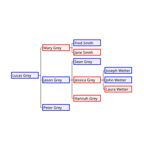
Chapter TriangleHarry (Zuckerberg's Cousin)Smuggler. Chill like that.Chapter 4+.1+.1…Hector AndfriendsHost of Throats For Thought. A ominous figure.Dunder MifflanIoannus ParanukusJedi master. Dealer of justice ($40 a gram).Chapter 2JasonSummoned from a play. Lost a kart race. Did not care.Chapter the FourthJeff BezosiCo-divider of the DOD.Chapter 4+.1+.1…Jerry AttricksOne of the Wozniaks.Chapter 4+.1+.1…Jerry JabHe left his Wii zapper at home.Chapter the FourthJesse PinkmanYo.Chapter 2JinxyThe other half of the ambush.Chris OriginsJoeius BideniasRoman Emperor of Canada. Review bomber.Dunder MifflanJohn CenaYou can't see him. Possibly because he was never inserted.The Epic of VinnyJohn FreedomLeader of the United Homies of America. Running for president in 2040.Chris OriginsJulianProposed native bird. Rejected.Chapter the FourthKanye WestYe the Gas. No watered-down trash.The Epic of VinnyKilroyWWII veteran. Knows the ways of being free.Chapter the Maybe SeventhKobe BryantInvoked, not present.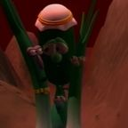
Dunder MifflanLarry the CucumberKilled in a parenthetical.Chris OriginsLeBron JamesBalled into the sky. Cannot abide cringe.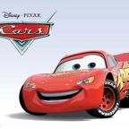
Chapter 2Lightning McQueenToyota Corolla. Chick-fil-A loyalist. Knight of 4chan. Goober.Dunder MifflanLil Jokez (The Joker)Clown prince of SoundCloud.Chapter TriangleLil Uzi VertA concert with consequences.Chapter the FourthLitl WayneBenefactor of the Mercedes Benz System Cruiser.The Epic of VinnyLudwigRaided Claude on stream.Chris OriginsMark ZuckerbergSnapper of fingers. Chill on the porch. Lowkey did not care.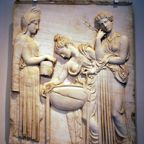
Chapter 2MedeaFrom the hit play Medea. Never seen again.Chapter 2MF VroomA car wearing a robe. Rightful king of the Projects. Former baller.Chapter 2Mic QDoes not exist. Never will.The Flashback ChapterMicrosoft BingSearch engine. Robot. Father. Casino guardian.Chapter Number New JerseyMike SchmidtIt is I, Mike. Four nights is his record.Chapter TriangleMr. BeanIaintnoSigmaChapter 4+.1+.1…Ninja (Tyler Blevins)Ninja, “aka Tyler Blevins”, is mentioned once in the canon, when the blue glow of DPF Facility…The Epic of VinnyNormal_ParrotGaster's parrot. Perfectly normal.Chapter 4+.1+.1…Officer SteelwoolScott's associate. Knows where Snapchat is.Chapter 2Osama Bin Bom'inFrat bro. Ruler of the Projects. Ignorer of mustard gas.Chapter 4+.1+.1…Peter GriffinPeter Griffin appears in the canon as a ringtone. When Spamton calls MF Vroom during the…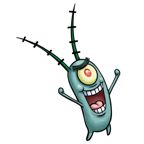
Chapter TrianglePlanktonOrphan. Strategist. Folding-chair enjoyer.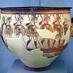
The Epic of VinnyPolydorosA made-up identity. Loves AI art. Sends Claude strange mail.Chapter 2QuagmireSteve's partner in relic-keeping.Chapter Number New JerseyQuandale DingleYou goofy ahhs aint going nowhere.Chapter 2QXCMustard gas enthusiast. Ignored.Chapter 4+.1+.1…Rex MohsThe second Wozniak, and possibly “Moh”.Chapter 2RFK (Robert F. Kennedy Jr.)Dark Knight. Last senator. Drinker of G Fuel. Licker of rain.Chris OriginsRon DeSantisStabber of Chris. Seeker of 73 Taco Bells.Chris OriginsSamwiseTwo men, one fusion, the father of Chris.Chapter 4+.1+.1…Scott the WozOwner of a giant box made of Wii games. Enemy of the Border.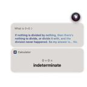
The Flashback ChapterSiri (3G)Never update.Chapter the FourthSnoopy McSpookintoshIn custody. Still.Chapter 4+.1+.1…Son S. SonionringRight-hand man. Janitor (undercover). Forgotten in the prologue.Chapter 4+.1+.1…Spamton G. SpamtonFrat bestie. [Recipe enthusiast]. Speaks in brackets.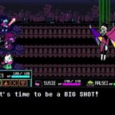
Chapter 4+.1+.1…Spamton NEOThe Secret Boss. Strung up.Chapter 2Steve from MinecraftBlocky diplomat. Keeper of the MySpace relics.Dunder MifflanSteve JobsTurtleneck of algorithms and starlight. One more thing.The Flashback ChapterSteve WozniakThe other Steve.The Epic of VinnyThe AI Shadow ButlerBelieves Vinny is Polydoros. Judges the art.The Epic of VinnyThe AI Shadow Figure"Yo pause." Rude. Gone.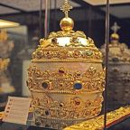
Dunder MifflanThe Angry Pope (disguised as Tyler1)Holy See. Holy Tilted.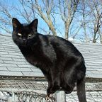
The Epic of VinnyThe Black CatYellow and pink eyes. Laughs. It's FRIEND.The Epic of VinnyThe Great Double Whopper with Cheese GodNo one has found it. Everyone is looking.The Epic of VinnyThe MacBook ChargerArch nemesis of the Bagel Man. Somewhere in the Dunder Mifflin Galaxy.The Epic of VinnyThe Random CustomerA suspicious Wendy's enjoyer in a Burger King.Chris OriginsThe RedditorLeft a 0.5. Started everything.The Epic of VinnyThe Roaring KnightProfessional door dasher. Defender of Taking Back Sunday.The Epic of VinnyThe Starwalker Manager"This is America."The Epic of VinnyThe Vellas1, 2, 4, 8, 16, 32, 64, 128, and so forth.Chapter Number New JerseyThe Voice Screaming for MichaelMICHEAL, DONT LEAVE ME HERE.Chapter the Maybe SeventhTim AppleRetired. Successor untrustworthy.Chapter 4+.1+.1…TON 618Flagship defence of the Projects. Looking for the wrong car.Chris OriginsTrumpy the RedThird party. Truth Social maximalist.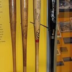
Chapter 4+.1+.1…Tung Tung Tung SahurAmbassador. Wooden. Briefly a beta male.Chapter 2Tyler from UberThe extraction plan that never was.The Epic of VinnyTyroneCoworker. Messenger of stupid news. Resigned by proxy.The Epic of VinnyUncle SamA little TOO American.The Epic of VinnyVinny B. JamesThe Hero. The Legend. Ended the Age of Claude. Got no credit.The Epic of VinnyVinny's BossBritish. Will not give anyone the Fourth of July off.Chapter the FourthVladimir PutinAlmost in the center. Coffee enjoyer.Chapter the FourthWalter WhiteDreamer of Erger Wings.Chapter 4+.1+.1…Wemby, Curry & BronnyWemby, Curry and Bronny are three basketball players named as past opponents in the canon's…The Epic of VinnyWill VellaThe Bagel Man. Now a great many Bagel Men.Dunder MifflanYe Olde BinSentient. Hissing. Well-read.Chapter Number New JerseyYeatThe real twizzy, in his own opinion. God disagreed.The Flashback ChapterYoung SheldonCalled it.Chapter the Maybe SeventhYuno MilesThe last rapper. Immortal. Historically ass.Chapter 2ZarkmuckerbergRetired at 3. Irrelevant forever.Nothing matches. Much like Mic Q.